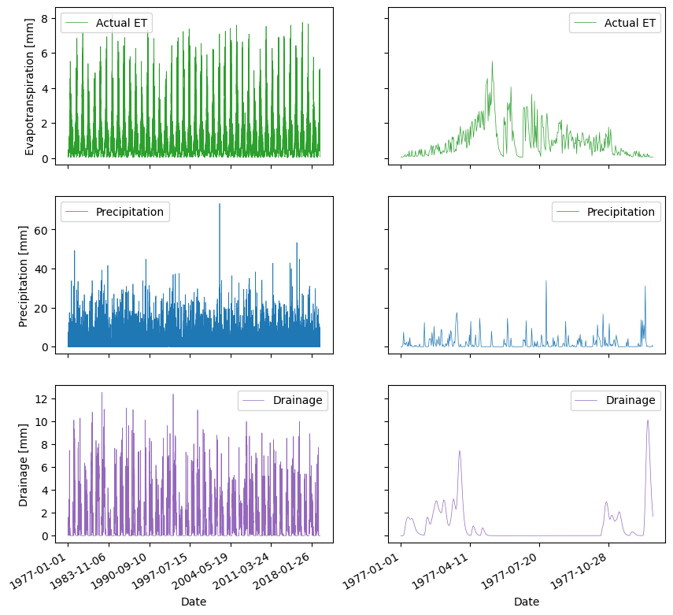
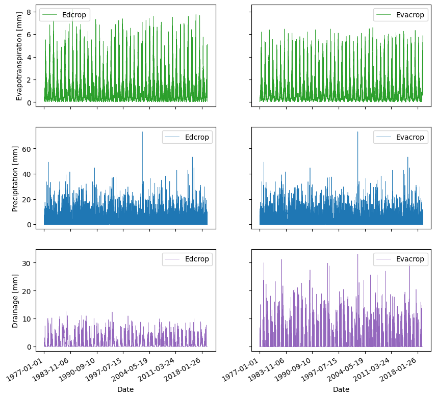

Getting Started with Edcrop#
import importlib.util
# specify the module that needs to be
# imported relative to the path of the
# module
from edcrop import edcrop
import os
import pandas as pd
import matplotlib.pyplot as plt
import warnings
warnings.simplefilter(action='ignore', category=FutureWarning)
wdir = os.path.join(os.path.dirname(os.getcwd()))
os.chdir(os.path.join(wdir, 'data/quick_start/'))
yaml = 'edcrop.yaml'
edcrop.run_model(yaml=yaml)
Running edcrop version 0.0.6
Read input file edcrop.yaml.
Loop through simulations.
Climate data file: Weatherdata_S1.edcrop_wf.
Soil parameter values: use default.
Crop parameter values: use default.
Model parameter values: update from input file.
ed:
plotseries: false
prlistd: Date T P Ep I Ea Dsum Db Dmp
prlisty: P Ep I Ea Dsum Db Dmp
wbfunc: ed
===> Run Station1_JB1_WW_ed
Model parameter values: update from input file.
Evacrop:
plotseries: false
prlistd: Date T P Ep I Ea Dsum Db Dmp Ve Vr Vb
prlisty: P Ep I Ea Dsum Db Dmp Ve Vr Vb
wbfunc: evacrop
===> Run Station1_JB1_WW_Evacrop
Crop parameter values: use default.
Model parameter values: update from input file.
ed:
plotseries: false
prlistd: Date T P Ep I Ea Dsum Db Dmp
prlisty: P Ep I Ea Dsum Db Dmp
wbfunc: ed
===> Run Station1_JB1_WM_ed
Model parameter values: update from input file.
Evacrop:
plotseries: false
prlistd: Date T P Ep I Ea Dsum Db Dmp Ve Vr Vb
prlisty: P Ep I Ea Dsum Db Dmp Ve Vr Vb
wbfunc: evacrop
===> Run Station1_JB1_WM_Evacrop
Soil parameter values: update from input file.
JB7:
Cmp: 0.10168858
Kmp: 10.0
Crop parameter values: use default.
Model parameter values: update from input file.
ed:
plotseries: false
prlistd: Date T P Ep I Ea Dsum Db Dmp
prlisty: P Ep I Ea Dsum Db Dmp
wbfunc: ed
===> Run Station1_JB7_WW_ed
Model parameter values: update from input file.
Evacrop:
plotseries: false
prlistd: Date T P Ep I Ea Dsum Db Dmp Ve Vr Vb
prlisty: P Ep I Ea Dsum Db Dmp Ve Vr Vb
wbfunc: evacrop
===> Run Station1_JB7_WW_Evacrop
Crop parameter values: use default.
Model parameter values: update from input file.
ed:
plotseries: false
prlistd: Date T P Ep I Ea Dsum Db Dmp
prlisty: P Ep I Ea Dsum Db Dmp
wbfunc: ed
===> Run Station1_JB7_WM_ed
Model parameter values: update from input file.
Evacrop:
plotseries: false
prlistd: Date T P Ep I Ea Dsum Db Dmp Ve Vr Vb
prlisty: P Ep I Ea Dsum Db Dmp Ve Vr Vb
wbfunc: evacrop
===> Run Station1_JB7_WM_Evacrop
C:\Users\pamcl\WPy64-31230\python-3.12.3.amd64\Lib\site-packages\edcrop\edcrop.py:354: SyntaxWarning: invalid escape sequence '\s'
sep='\s+|,\s*|;\s*', engine='python')
---------------------------------------------------------------------
KeyboardInterrupt Traceback (most recent call last)
Cell In[1], line 21
17 os.chdir(os.path.join(wdir, 'data/quick_start/'))
19 yaml = 'edcrop.yaml'
---> 21 edcrop.run_model(yaml=yaml)
File ~\WPy64-31230\python-3.12.3.amd64\Lib\site-packages\edcrop\edcrop.py:2997, in run_model(yaml, log)
2994 # Write and plot output
2995 begin_name = (clim + "_" + soil + "_" + crop + "_"
2996 + model)
-> 2997 ts.print_from_dictionary(begin_name)
2998 if mp.plotseries:
2999 ts.plot_time_series(sd.soilname, cd.cropname,
3000 begin_name)
File ~\WPy64-31230\python-3.12.3.amd64\Lib\site-packages\edcrop\edcrop.py:274, in TimeSeries.print_from_dictionary(self, fname)
272 for i in range(1,n):
273 colalias.append(self.prlist[i].rjust(11))
--> 274 df.to_csv(fname+'_wb.out',index=False,columns=self.prlist,\
275 float_format="%11.6f",date_format=dtformat,header=colalias)
277 n=len(self.prlist_y)
278 if n>0:
279 # df2=df.resample('A',how=sum)
File ~\WPy64-31230\python-3.12.3.amd64\Lib\site-packages\pandas\util\_decorators.py:333, in deprecate_nonkeyword_arguments.<locals>.decorate.<locals>.wrapper(*args, **kwargs)
327 if len(args) > num_allow_args:
328 warnings.warn(
329 msg.format(arguments=_format_argument_list(allow_args)),
330 FutureWarning,
331 stacklevel=find_stack_level(),
332 )
--> 333 return func(*args, **kwargs)
File ~\WPy64-31230\python-3.12.3.amd64\Lib\site-packages\pandas\core\generic.py:3964, in NDFrame.to_csv(self, path_or_buf, sep, na_rep, float_format, columns, header, index, index_label, mode, encoding, compression, quoting, quotechar, lineterminator, chunksize, date_format, doublequote, escapechar, decimal, errors, storage_options)
3953 df = self if isinstance(self, ABCDataFrame) else self.to_frame()
3955 formatter = DataFrameFormatter(
3956 frame=df,
3957 header=header,
(...)
3961 decimal=decimal,
3962 )
-> 3964 return DataFrameRenderer(formatter).to_csv(
3965 path_or_buf,
3966 lineterminator=lineterminator,
3967 sep=sep,
3968 encoding=encoding,
3969 errors=errors,
3970 compression=compression,
3971 quoting=quoting,
3972 columns=columns,
3973 index_label=index_label,
3974 mode=mode,
3975 chunksize=chunksize,
3976 quotechar=quotechar,
3977 date_format=date_format,
3978 doublequote=doublequote,
3979 escapechar=escapechar,
3980 storage_options=storage_options,
3981 )
File ~\WPy64-31230\python-3.12.3.amd64\Lib\site-packages\pandas\io\formats\format.py:1014, in DataFrameRenderer.to_csv(self, path_or_buf, encoding, sep, columns, index_label, mode, compression, quoting, quotechar, lineterminator, chunksize, date_format, doublequote, escapechar, errors, storage_options)
993 created_buffer = False
995 csv_formatter = CSVFormatter(
996 path_or_buf=path_or_buf,
997 lineterminator=lineterminator,
(...)
1012 formatter=self.fmt,
1013 )
-> 1014 csv_formatter.save()
1016 if created_buffer:
1017 assert isinstance(path_or_buf, StringIO)
File ~\WPy64-31230\python-3.12.3.amd64\Lib\site-packages\pandas\io\formats\csvs.py:270, in CSVFormatter.save(self)
251 with get_handle(
252 self.filepath_or_buffer,
253 self.mode,
(...)
258 ) as handles:
259 # Note: self.encoding is irrelevant here
260 self.writer = csvlib.writer(
261 handles.handle,
262 lineterminator=self.lineterminator,
(...)
267 quotechar=self.quotechar,
268 )
--> 270 self._save()
File ~\WPy64-31230\python-3.12.3.amd64\Lib\site-packages\pandas\io\formats\csvs.py:275, in CSVFormatter._save(self)
273 if self._need_to_save_header:
274 self._save_header()
--> 275 self._save_body()
File ~\WPy64-31230\python-3.12.3.amd64\Lib\site-packages\pandas\io\formats\csvs.py:313, in CSVFormatter._save_body(self)
311 if start_i >= end_i:
312 break
--> 313 self._save_chunk(start_i, end_i)
File ~\WPy64-31230\python-3.12.3.amd64\Lib\site-packages\pandas\io\formats\csvs.py:324, in CSVFormatter._save_chunk(self, start_i, end_i)
321 data = list(res._iter_column_arrays())
323 ix = self.data_index[slicer]._get_values_for_csv(**self._number_format)
--> 324 libwriters.write_csv_rows(
325 data,
326 ix,
327 self.nlevels,
328 self.cols,
329 self.writer,
330 )
File writers.pyx:73, in pandas._libs.writers.write_csv_rows()
KeyboardInterrupt:
df = pd.read_csv('Station1_JB1_WW_ed_wb.out')
df.columns = df.columns.str.replace(' ', '')
df_sub = df.iloc[0:365,:]
fig, axs = plt.subplots(3,2, sharex = 'col', sharey='row', figsize=(10,10))
df.plot.line(x='Date', y='Ea', ax=axs[0,0], c='C2', label='Actual ET', lw=0.5)
df.plot.line(x='Date', y='P', ax=axs[1,0], c='C0', label='Precipitation', lw=0.5)
df.plot.line(x='Date', y='Dsum', ax=axs[2,0], c='C4', label='Drainage', lw=0.5)
df_sub.plot.line(x='Date', y='Ea', ax=axs[0,1], c='C2', label='Actual ET', lw=0.5)
df_sub.plot.line(x='Date', y='P', ax=axs[1,1], c='C0', label='Precipitation', lw=0.5)
df_sub.plot.line(x='Date', y='Dsum', ax=axs[2,1], c='C4', label='Drainage', lw=0.5)
axs[0,0].set_ylabel('Evapotranspiration [mm]')
axs[1,0].set_ylabel('Precipitation [mm]')
axs[2,0].set_ylabel('Drainage [mm]')
fig.autofmt_xdate()

df2 = pd.read_csv('Station1_JB1_WW_Evacrop_wb.out')
df2.columns = df2.columns.str.replace(' ', '')
fig, axs = plt.subplots(3,2, sharex = 'col', sharey='row', figsize=(10,10))
df.plot.line(x='Date', y='Ea', ax=axs[0,0], c='C2', label='Edcrop', lw=0.5)
df2.plot.line(x='Date', y='Ea', ax=axs[0,1], c='C2', label='Evacrop', lw=0.5)
df.plot.line(x='Date', y='P', ax=axs[1,0], c='C0', label='Edcrop', lw=0.5)
df2.plot.line(x='Date', y='P', ax=axs[1,1], c='C0', label='Evacrop', lw=0.5)
df.plot.line(x='Date', y='Dsum', ax=axs[2,0], c='C4', label='Edcrop', lw=0.5)
df2.plot.line(x='Date', y='Dsum', ax=axs[2,1], c='C4', label='Evacrop', lw=0.5)
#df_sub.plot.line(x='Date', y='Ea', ax=axs[0,1], c='C2', label='Actual ET', lw=0.5)
#df_sub.plot.line(x='Date', y='P', ax=axs[1,1], c='C0', label='Precipitation', lw=0.5)
#df_sub.plot.line(x='Date', y='Dsum', ax=axs[2,1], c='C4', label='Drainage', lw=0.5)
axs[0,0].set_ylabel('Evapotranspiration [mm]')
axs[1,0].set_ylabel('Precipitation [mm]')
axs[2,0].set_ylabel('Drainage [mm]')
fig.autofmt_xdate()
